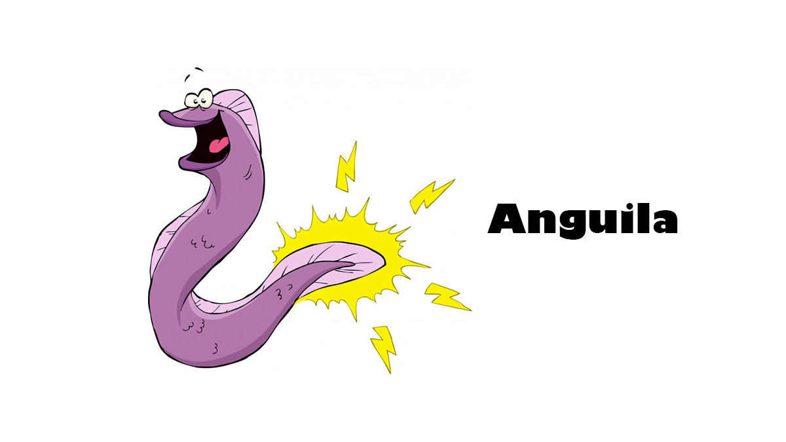
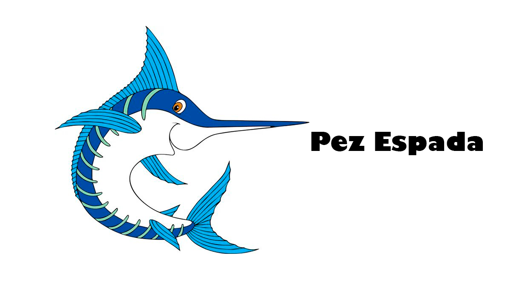
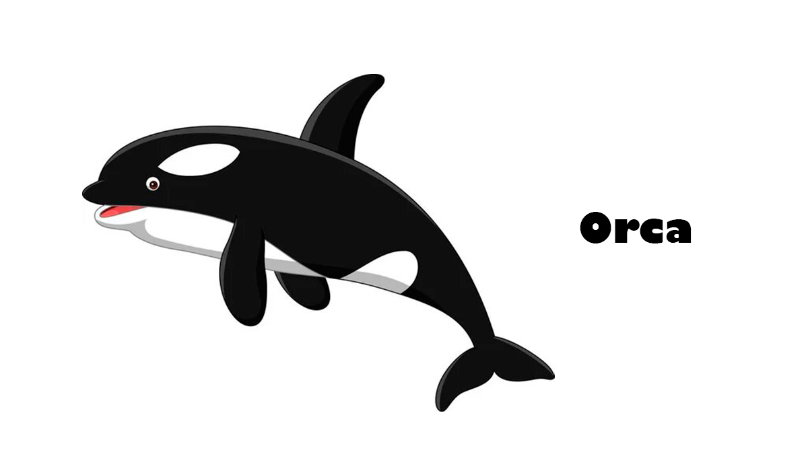
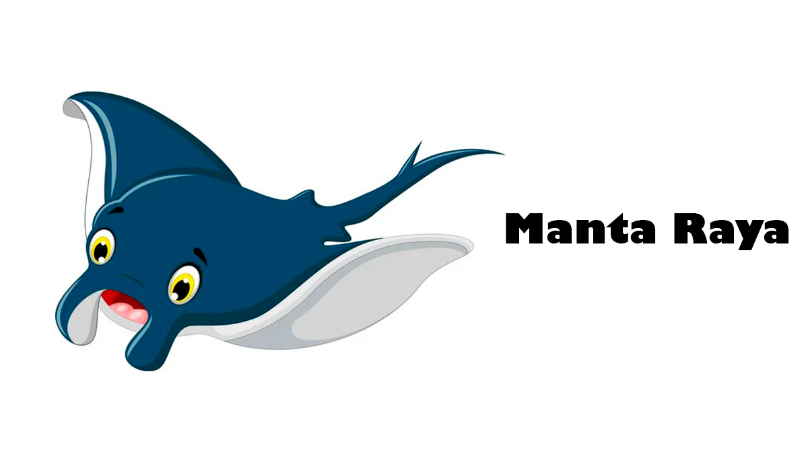
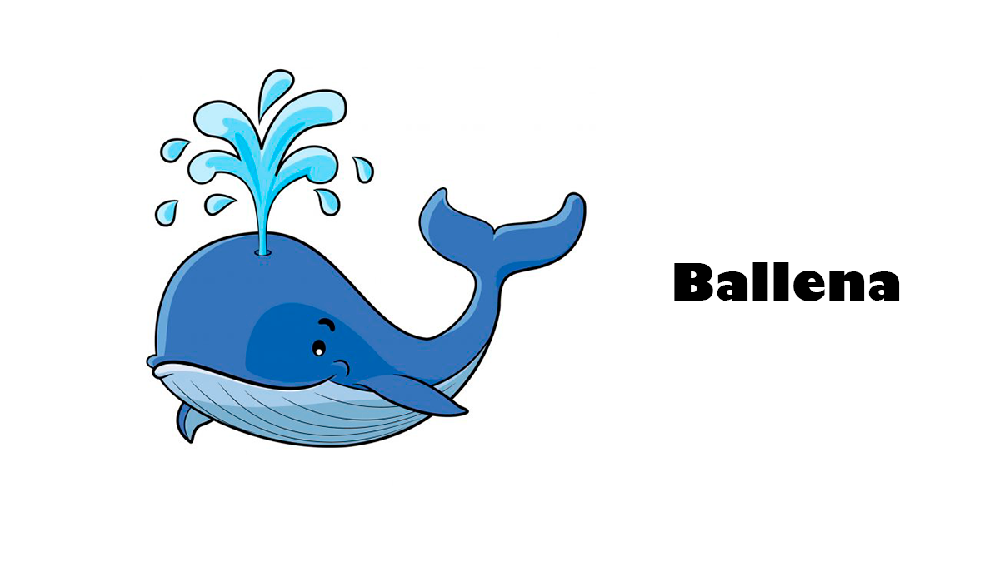
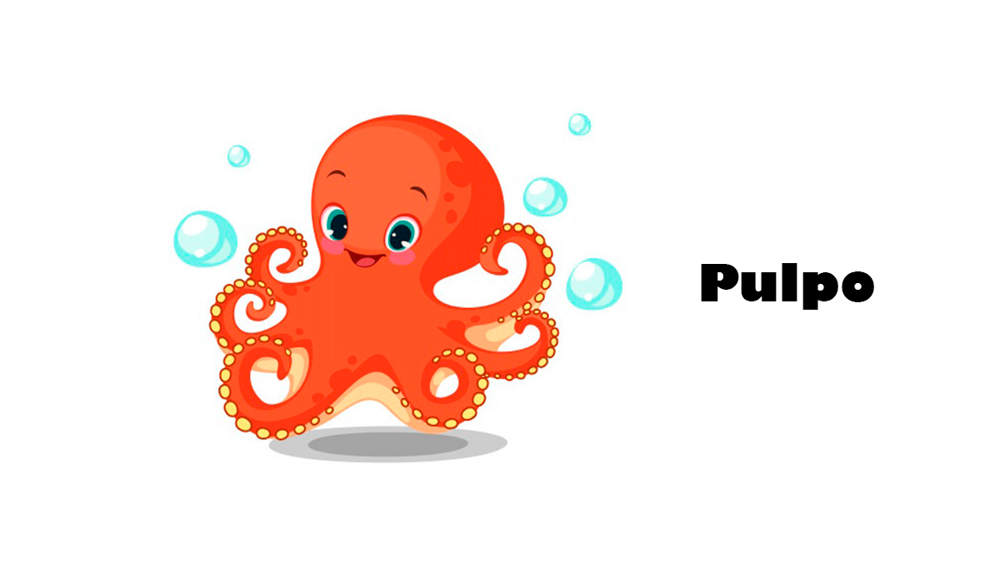

Habitat
Acuáticos
Finalmente, tenemos los espacios acuáticos, en los cuales encontramos también diversos tipos de
hábitat.
En este sentido podemos mencionar:
ríos, lagos, estuarios, pantanos, estanques y en general cualquier cuerpo de agua natural o no,
en el cual se desarrolla la vida.





